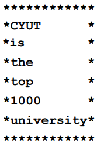
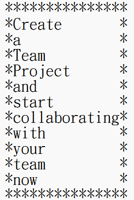
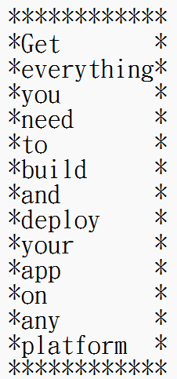

請撰寫一個程式，從資料檔 e.txt 讀入一個英文句子(由 a-z 的大小寫與空白組成，不含句點)，裡面有好幾個單字，接著以最長單字為最大寬度，將這些單字輸出在一個由星號字元的長方形中。
範例輸入：
CYUT is the top 1000 university
範例輸出：
CYUT is the top 1000 university

(0)
範例輸入：
CYUT is the top 1000 university
範例輸出：
CYUT is the top 1000 university
(1)
範例輸入：
Create a Team Project and start collaborating with your team now
範例輸出：
Create a Team Project and start collaborating with your team now

(2)
範例輸入：
Get everything you need to build and deploy your app on any platform
範例輸出：
Get everything you need to build and deploy your app on any platform

|
#include <stdio.h>
#include <string.h>
// 找出最長的單字長度
int max_len(char * str) {
int max = 0, temp = 0;
for (int i = 0; i < strlen(str); i++) {
if (str[i] == ' ') {
if (temp > max) {
max = temp;
}
temp = 0;
}
else {
temp++;
}
}
if (temp > max) {
max = temp;
}
return max;
}
int main(void) {
// 讀入輸入資料
char str[201], *str_tok;
gets(str);
// 取得最長字串
int len = max_len(str);
// 印出答案
printf("%s\n", str);
for (int i = 0; i < len + 2; i++) {
printf("*");
}
printf("\n");
// 分割字串以空格來分割
str_tok = strtok(str, " ");
while (str_tok != NULL) {
printf("*");
printf("%s", str_tok);
for (int i = 0; i < len - strlen(str_tok); i++) {
printf(" ");
}
printf("*\n");
str_tok = strtok(NULL, " ");
}
for (int i = 0; i < len + 2; i++) {
printf("*");
}
printf("\n");
return 0;
}
|